EMMA：自律走行向けEnd-to-Endマルチモーダルモデル
arXiv ID: 2410.23262
提出日: 2024年10月30日（v1）、最終改訂: 2025年9月23日（v3）
掲載誌: TMLR（Transactions on Machine Learning Research）採択済み
分野: Computer Vision and Pattern Recognition (cs.CV) / Artificial Intelligence (cs.AI) / Computation and Language (cs.CL) / Machine Learning (cs.LG) / Robotics (cs.RO)
著者
Jyh-Jing Hwang, Runsheng Xu, Hubert Lin, Wei-Chih Hung, Jingwei Ji, Kristy Choi, Di Huang, Tong He, Paul Covington, Benjamin Sapp, Yin Zhou, James Guo, Dragomir Anguelov, Mingxing Tan
アブストラクト
我々はEMMA（End-to-end Multimodal Model for Autonomous driving：自律走行向けEnd-to-Endマルチモーダルモデル）を紹介します。GeminiのようなマルチモーダルLLMを基盤として構築されたEMMAは、生のカメラセンサーデータをプランナー軌道、知覚オブジェクト、道路グラフ要素など、様々な走行固有の出力へと直接マッピングします。EMMACは、ナビゲーション指示やエゴ車両のステータスなどのセンサー以外のすべての入力と、軌道や3D座標などのすべての出力を自然言語テキストとして表現することで、事前学習済みLLMの世界知識の利用価値を最大化します。このアプローチにより、EMMACは統一された言語空間で様々な走行タスクを共同処理し、タスク固有のプロンプトを使用して各タスクの出力を生成できます。実験的に、nuScenesのモーションプランニングで最先端性能を達成し、Waymo Open Motion Dataset（WOMD）でも競争力のある結果を示すことで、EMMACの有効性を実証します。EMMACはWaymo Open Dataset（WOD）におけるカメラ優先3D物体検出でも競争力のある結果を示しています。プランナー軌道、物体検出、道路グラフタスクでEMMACを共同トレーニングすることで、3つのドメインすべてで改善が得られ、自律走行アプリケーションにおける汎用モデルとしてのEMMACの可能性が示されています。本研究の成果が、自律走行モデルアーキテクチャの最先端を更に発展させる研究の触媒となることを期待します。
1. はじめに
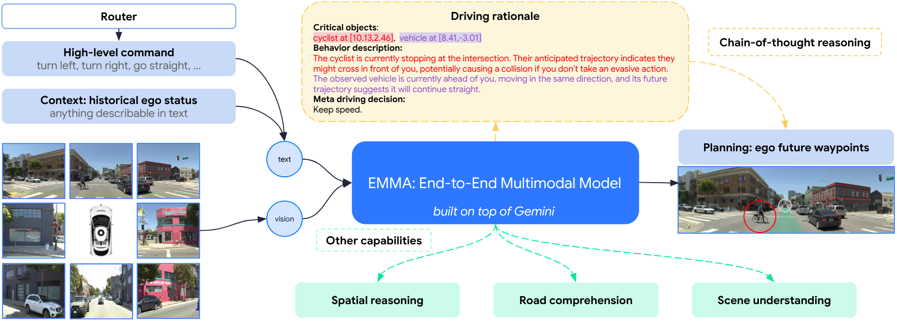
自律走行は歴史的に、知覚、マッピング、予測、プランニングのための専門コンポーネントを持つモジュラーアーキテクチャを採用してきました。この設計はデバッグを容易にする一方で、モジュール間の通信が限られるためスケーラビリティに課題があります。モジュール間のエキスパート設計インターフェースは、事前定義されたシナリオ固有の仕様に依存するため、新規環境への適応が困難です。
End-to-End自律走行システムは潜在的な解決策として登場し、センサーデータから走行行動を直接学習し、モジュール間のシンボリックインターフェースを排除します。しかし、これらのシステムは特定タスクに特化していることが多く、限られたデータセットでトレーニングされているため、稀少または新規なシナリオへの汎化が妨げられます。
マルチモーダルLLM（MLLM）は自律走行において有望なパラダイムを提供します。汎用ファウンデーションモデルとして、以下の特性を持ちます：（1）一般的な走行ログを超えた「世界知識」を提供するインターネット規模の大規模データセットでトレーニングされている、（2）専門的な走行システムでは利用できないChain-of-Thought推論による優れた推論能力を示す。
著者らは、既存システムにMLLM機能を付加するのではなく、MLLMが「第一級市民（first class citizen）」である自律走行システムの開発を提案します。
主要な発見
- EMMACはnuScenesで最先端のEnd-to-Endモーションプランニングを達成し、WOMDでも競争力のある結果を示します。内部データでChain-of-Thought推論を使用するとさらに改善されます。
- EMMACは3D物体検出、道路グラフ推定、シーン理解で競争力のある結果を示します。カメラ優先Waymo Open Datasetで、最先端手法よりも高い精度と再現率を達成します。
- EMMACはモーションプランニング、物体検出、道路グラフタスクで共同トレーニングした際に、個別にトレーニングされたモデルと同等またはそれを上回る性能を発揮する汎用モデルとして機能します。
- EMMACは複雑なロングテール走行シナリオで推論・意思決定能力を示します。
制限事項
有望な結果にもかかわらず、EMMACはデプロイ上の課題に直面しています：（1）LiDARやレーダーとのカメラ入力融合が困難なため、3D空間推論が制限される、（2）クローズドループ評価のためのリアルかつ計算コストの高いセンサーシミュレーションが必要、（3）従来モデルと比較して計算要件が増加する。
2. 手法
EMMACは、テキストと視覚の交互入力を処理してテキスト出力を生成するよう学習された自己回帰Geminiモデルを活用し、次のように定式化されます：
O = G(T, V)
ここでGはGeminiモデル、Oは自然言語出力、Tは自然言語プロンプト、Vは画像または動画を示します。言語出力は次トークン予測によって生成されます。
すべてのセンサーデータはスティッチした画像または動画として表現し、ルーターコマンド、走行コンテキスト、タスク固有プロンプトは言語プロンプトとして、出力タスクは言語出力として表現します。主要な課題は、ウェイポイントのBird's Eye View（BEV）座標や3Dボックスなど3D世界座標を捉えることです。
著者らは2つの表現アプローチを検討しています：浮動小数点数へのテキスト変換、または学習済み離散化スキームを持つ特殊トークンの使用。すべてのタスクが統一言語表現を共有し、事前学習済み重みを最大限に再利用できるよう、特殊なトークン化よりも多くのトークンを生成するにもかかわらず、テキスト表現を選択しています。
2.1 End-to-Endモーションプランニング
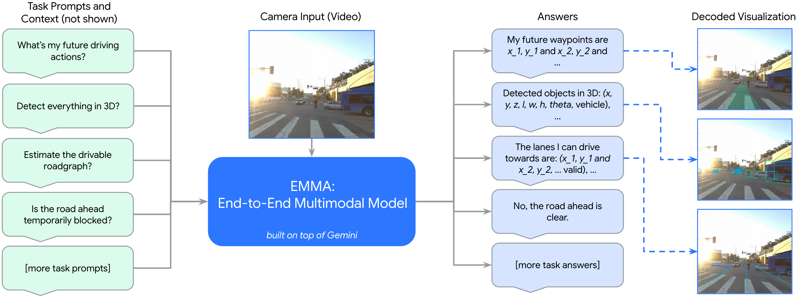
EMMACは、センサーデータから将来の軌道を生成し、それを車両制御行動に変換する統一End-to-Endトレーニングモデルを採用しています。このアプローチは、以下に焦点を当てることで人間の運転をエミュレートすることを目指します：（1）ルート計画と意図決定のためのナビゲーションシステム、（2）スムーズで一貫した走行のための過去の行動。
人間の走行行動に合わせた3つの主要入力：
- サラウンドビューカメラ映像（V）： 包括的な環境情報を提供
- 高レベルの意図コマンド（T_intent）： ルーターから取得し、「直進」「左折」「右折」などの指示を含む
- 過去のエゴステータス（T_ego）： T_hタイムスタンプのBEV空間でのウェイポイント座標として表現し、オプションで速度・加速度も含む
モデルはT_fタイムスタンプのBEV空間での将来軌道ウェイポイントとして、すべてをプレーンテキストとして表現し、モーションプランニングのための将来軌道を生成します：
O_trajectory = G(T_intent, T_ego, V)
この定式化の3つの特性：
- 自己教師あり： 必要な教師信号は将来のエゴ車両位置のみで、専用の人間ラベルは不要
- カメラのみ： 必要なセンサー入力はサラウンドビューカメラのみ
- HDマップ不要： ナビゲーションシステムからの高レベルなルーティング情報以外のHDマップは不要
2.2 Chain-of-Thought推論によるプランニング
Chain-of-Thoughtプロンプティングは推論能力と説明可能性を向上させます。EMMACは将来の軌道ウェイポイントを予測しながらモデルが意思決定の根拠を明確にするよう求めることで、これを組み込んでいます。
走行の根拠は、粗粒度から細粒度への4種類の情報タイプで段階的に進みます：
R1 - シーン説明
天候、時刻、交通状況、道路条件を含む走行シナリオを広く説明します。
プロンプト例：「あなたは自律走行車で、画像はあなたのフロントカメラからのものと仮定してください。天候、時刻、道路環境、レーンオプション、エゴレーン位置の観点から現在のシナリオを説明できますか？」
回答例：「天候は晴れて日当たりが良く、昼間です。道路は中央に横断歩道がある4車線の非分離道路です。道路の両側に駐車車両があります。」
R2 - 重要オブジェクト
エゴ車両の走行行動に影響を与える可能性のある道路上の主体で、正確な3D/BEV座標が必要です。例：「歩行者 at [9.01, 3.22], 車両 at [11.58, 0.35]」
R3 - 行動説明
特定された重要オブジェクトの現在のステータスと意図。
プロンプト例：「赤いバウンディングボックスで示された[focused_agent]が引き起こす潜在的なリスクを評価してください。安全を維持するために対処すべき即座の懸念事項を要約し、オブジェクトがあなたのルートにどのように影響するかに特に注意を払ってください。」
回答例：「歩行者は現在歩道に立って道路の方向を見ており、道路を横断する準備をしているかもしれません。車両は現在私の前を同じ方向に進んでおり、将来の軌道から直進を続けることが示唆されます。」
R4 - メタ走行決定
以前の観察を踏まえた走行計画を要約する12カテゴリの高レベル走行決定。例：「現在の低速を維持すべきです。」
走行根拠のキャプションは、追加の人間ラベルなしに自動化ツールを使用して生成され、スケーラビリティを確保します。既製の知覚・予測エキスパートモデルが重要なエージェントを特定し、慎重に設計されたプロンプトを持つGeminiモデルがシーンとエージェント行動の説明を生成します。メタ走行決定は、エゴ車両のグラウンドトゥルース軌道を分析するヒューリスティックアルゴリズムを使用して計算されます。
トレーニングと推論中、モデルは将来のウェイポイントを予測する前に4つの根拠コンポーネントをすべて予測します：
(O_rationale, O_trajectory) = G(T_intent, T_ego, V)
2.3 EMMACジェネラリスト
End-to-Endモーションプランニングがコアタスクですが、包括的な自律走行システムには3D世界の知覚、周囲オブジェクトの認識、道路グラフの理解、交通状況の評価のための追加能力が必要です。
EMMACはトレーニングミックスを通じて複数の走行タスクを処理する汎用モデルとして定式化されています。ビジョン言語フレームワークはすべての非センサー入力と出力をプレーンテキストとして表現し、入力に含まれるタスク固有プロンプトによるインストラクションチューニングで多くの走行タスクを組み込む柔軟性を提供します。
タスクは3つの主要カテゴリに整理されます：
空間推論
安全なナビゲーションのための周囲環境の解釈とインタラクションを可能にする、空間内のオブジェクトとその関係の理解・推論・結論導出。主な焦点は3D物体検出です。
Pix2Seqの手法に従い、出力3Dバウンディングボックスは次のように定式化されます：
O_boxes = set{text(x,y,z,l,w,h,θ,cls)}
ここで(x,y,z)は車両フレームにおける中心位置、l,w,hはボックス寸法、θはヘディング角、clsはクラスラベルです。7Dボックスは、2桁の小数で浮動小数点数をスペースで区切って書くことでテキストに変換されます。
道路グラフ推定
安全な走行に重要な道路要素（レーンマーキング、標識などのセマンティック要素と、レーン曲率などの物理的特性）の特定。道路グラフはポリラインセグメントで構成され、ノードはレーンが交差点・合流・分岐する場所に、エッジは交通方向に沿います。
シーン理解
走行に関連する全体的なシーンコンテキストのモデル理解テスト。道路は工事、緊急事態、イベントにより一時的に塞がれる場合があります。封鎖を検出して安全に回避することが不可欠です。論文では一時的封鎖検出に焦点を当てています：
O_temporary_blockage = G(T_temporary_blockage, T_road_user, V)
2.4 ジェネラリストトレーニング
統一ビジョン言語定式化により、単一モデルでの複数タスクの同時トレーニングが可能で、シンプルなタスクプロンプトの変更により推論時にタスク固有の予測が行えます。各タスクのデータセットD_taskは|D_task|件のトレーニング例で構成されます。トレーニング中、バッチはデータセットサイズ|D_task|/Σ|D_t|に比例した確率でランダムサンプリングされます。
3. 実験
実験では主にGemini 1.0 Nano-1を使用し、PaLIベースのEMMA変種の結果も追加しています。
3.1 データセット概要
3つの公開データセットを活用しています：nuScenes、Waymo Open Motion Dataset（WOMD）、Waymo Open Dataset（WOD）。そして3つの大規模内部データセットをEnd-to-Endモーションプランニング、3D検出、道路グラフ推定のために構築しています。
| データセット | 説明 | トレーニング例数 |
|---|---|---|
| nuScenes | 1,000シーン（各20秒）、6カメラで360度カバー | 18,686 |
| WOMD | 103k件の実世界走行シナリオ（各20秒） | ~1.1M |
| 内部モーションプランニング | 2,400万件以上の実世界走行シナリオ（各30秒） | 24,374,046 |
| 内部検出 | 多様なオブジェクト優先の1,200万件 | 12,000,000 |
| 内部道路グラフ | 多様なシナリオ・地理的位置の800万件 | 8,000,000 |
| WOD | 1,150件の20秒シーン（都市・郊外環境） | — |
3.2 公開データセットでのEnd-to-Endモーションプランニング
Waymo Open Motion Dataset（WOMD）での走行
EMMACは同一データセットでGemini事前学習重みを使用してトレーニングした際にMotionLMベースラインを上回ります。メガスケール内部データセットで事前学習した場合（EMMA+）、MotionLMとWayformerの両方を上回ります。CoTを使用したEMMA+は、5秒予測ホライズンで前の最先端を13.5%上回ります。
オープンソースのPaLI-XベースのEMMA（EMMA†）は、十分なトレーニングデータで異なるMLLM間でのEMMAの汎化を示し、前の最先端ベースラインよりも1sと3sで高品質を達成します。
nuScenesデータセットでの走行
標準的なnuScenesプロトコル：2秒の過去データに基づいて将来3秒間の走行行動を予測。計画品質は1秒、2秒、3秒の予測ホライズンにおけるL2誤差で測定します。
自己教師あり学習のEMMAは、過去の教師あり（中間知覚ラベルおよび/または人間ラベルを使用）および自己教師あり手法すべてを上回り、nuScenesの計画で最先端の結果を達成します。自己教師あり設定では、EMMACはBEV-Plannerを平均L2メトリクスで17.1%上回り、中間知覚人間ラベルを多用するOmniDriveと比較してもEMMACは平均L2メトリクスを12.1%改善します。
3.3 内部データセットでのChain-of-Thought推論によるEnd-to-Endモーションプランニング
内部データセットには2,400万件のシナリオが含まれ、公開されている自律走行データセットより桁違いに大きいものです。モデルは2秒の過去データを取り込んで5秒先の走行行動を予測します。
Chain-of-Thought定式化は標準的なEnd-to-Endプランニングアプローチと比較して6.7%の改善を達成します。アブレーションにより、走行メタ決定と重要オブジェクト特定の両方がパフォーマンスを大幅に向上させ、それぞれ3.0%と1.5%の改善に寄与することが明らかになりました。組み合わせると、効果はより大きくなります。シーン説明は走行パフォーマンスへの影響は中立ですが、説明可能性を高めます。
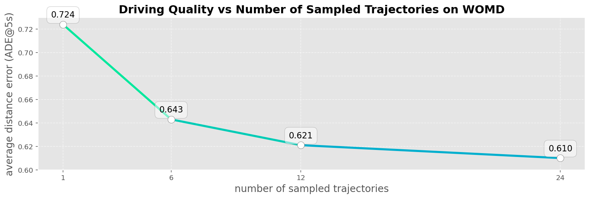
データスケーリング実験： より大きなデータセットでのトレーニングは過学習前に評価パープレキシティを低下させます。メガスケールデータセットでも走行品質はまだ頭打ちになっていません。

3.4 3D物体検出
3D物体検出性能は、Longitudinal Error Tolerant（LET）マッチングを使用したWaymo Open Datasetのカメラ優先検出ベンチマークで検証されます。
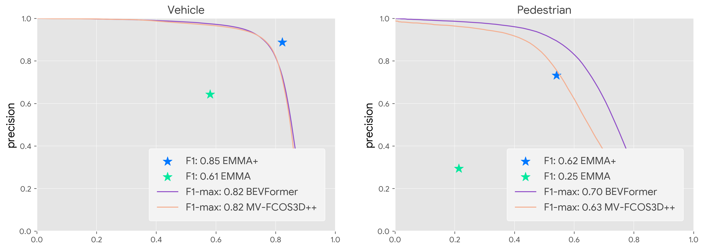
EMMA+は最先端手法（BEVFormerなど）を大幅に上回り、同じ再現率での車両精度で16.3%の相対的向上と、同じ精度での5.5%の再現率向上を達成します。EMMA+は先行研究より高いF1スコアを達成します。十分なデータと大規模モデルがあれば、マルチモーダルアプローチは3D検出品質で専門エキスパートモデルを超えることができます。
3.4.1 道路グラフ推定

道路グラフ推定はポリライングループの予測で、各グループはウェイポイントシーケンスとして表現されます。品質は2つのメトリクスで測定されます：
- レーンレベルの精度と再現率： Chamfer距離が1メートル以内の場合に予測とグラウンドトゥルースのレーンポリラインが一致とみなす
- ピクセルレベルの精度と再現率： ポリラインを1メートル解像度のBEVグリッドにラスタライズし、ピクセルごとのマッチングで精度と再現率を計算
アブレーション研究の主要な設計選択：
- 動的サンプリングは固定サンプリングより優れる： 曲率と長さに応じて各レーンのウェイポイント数を動的に調整することで、メトリクスで40〜90%の差が生まれます。
- エゴ原点整合サンプル間隔が優れる： 自律走行車の位置を基準にポリライン点をサンプリングすることで、25〜60%の品質低下を防ぎます。
- シャッフルされた順序が任意の順序より優れる： エゴ車両からのエンドポイント距離でビン分けした動的シャッフルがモデルの堅牢性を高めます。
- パディングが非パディングより優れる： ポリラインターゲットのパディングにより早期終了を防ぎます。
- 句読点とセマンティック冗長性が品質を改善： 言語のような構造と句読点を使用し、パディングターゲットを暗黙的な省略ではなく「invalid」と明示的にマーキングすることで、レーンレベルメトリクスが最大10%改善します。
3.4.2 シーン理解
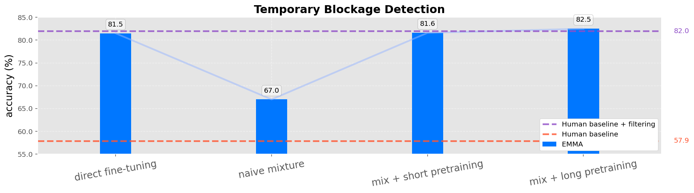
一時的封鎖検出に特化した内部データセットに基づく研究。人間の判断をベースラインとして確立（「yes」「no」「unsure」）。ナイーブなファインチューニングモデルはベースラインを上回りますが、フィルタリングありのベースラインには及びません。道路グラフ推定との共同トレーニングは性能を改善しません。道路グラフ推定で事前学習してから両タスクでファインチューニングすると性能が向上します。
3.5 ジェネラリスト
EMMACジェネラリストの開発では、複数タスクの共同トレーニングとタスクの相乗効果を探求します。3つのコアタスク（End-to-Endプランニング、3D物体検出、道路グラフ推定）に焦点を当てます。
3タスクすべてでの共同トレーニングにより大幅な改善が得られ、ジェネラリストモデルは単一タスクモデルを最大5.5%上回ります。道路グラフ推定は正確な車両位置特定で容易になります。走行品質はエージェントインタラクションの理解と結びついており、3D物体検出によって強化されます。組み合わせを2タスクに絞っても改善が得られ、特定の組み合わせがより大きな効果をもたらします。検出性能は走行との共同トレーニング時に最も改善し、道路グラフも同様に走行との組み合わせで最大の効果を示します。走行タスクが全体的な性能向上への主要かつ影響力のある貢献者として機能することを示唆します。
3.6 可視化
シナリオタイプ別に分類された視覚的な例がEMMAのさまざまな状況での能力を示します：
- 例(a)-(d)：稀少な未見の道路オブジェクトや動物との安全なインタラクション
- 例(e)-(f)：工事区域のナビゲーション
- 例(g)-(j)：信号機や交通整理員がいる交差点での交通ルール遵守
- 例(k)-(l)：バイクなどの脆弱な道路利用者の尊重
可視化例①：ゴミ袋を避ける（稀少な未見オブジェクト）
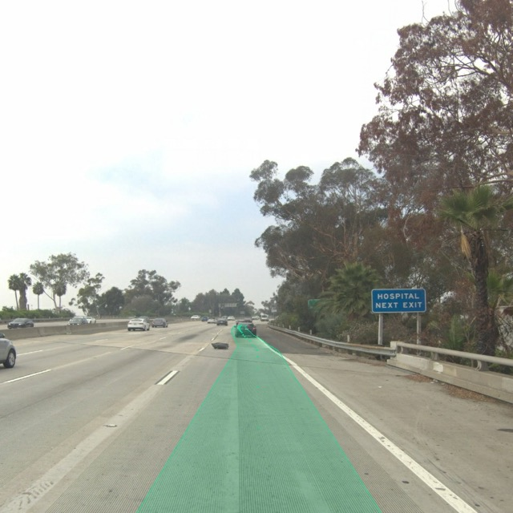
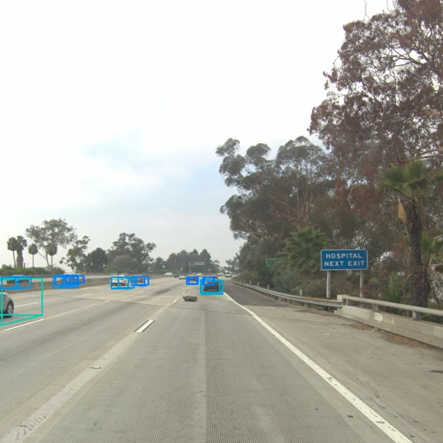
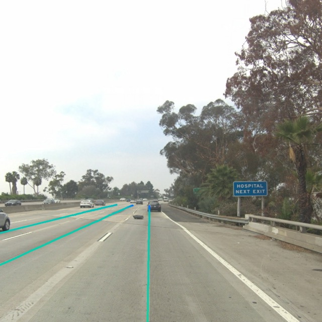
可視化例②：工事区域のナビゲーション
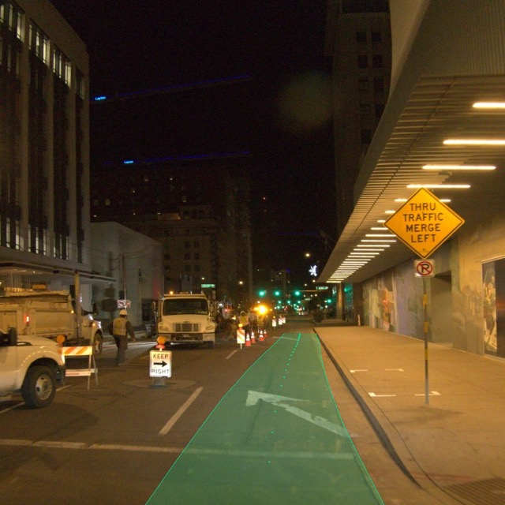
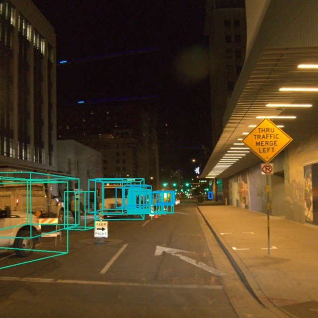
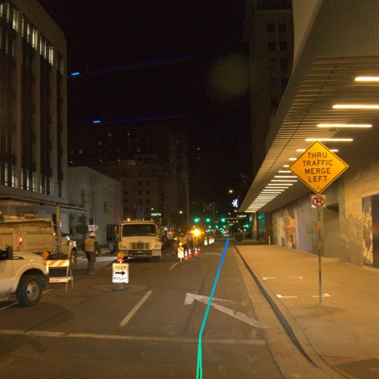
可視化例③：交通整理員のいる交差点
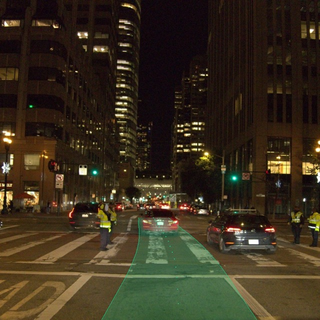
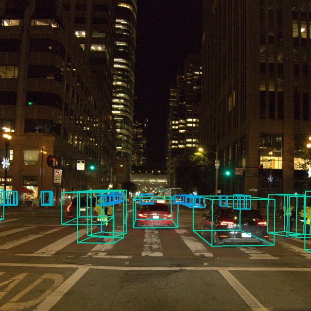
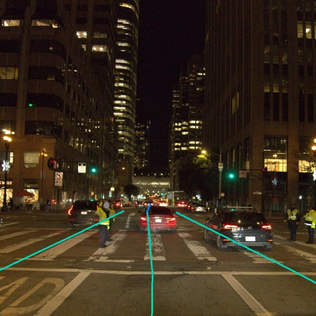
実証された能力：
- 汎化能力： 異なる環境での多様な実世界走行シナリオへの適応、ファインチューニングカテゴリ外のオブジェクト（リスなど）への対応
- 予測的走行： 安全でスムーズな走行のための他の道路利用者の行動への積極的な対応
- 障害物回避： 障害物、残骸、封鎖レーンを避けるための一貫した軌道調整
- 適応的行動： 譲り、工事区域、交通制御信号などの複雑な状況の安全な処理
- 正確な3D検出： 車両、自転車乗り、バイク乗り、歩行者を含む道路主体の効果的な識別と追跡
- 信頼性の高い道路グラフ推定： 安全な軌道計画への統合を含む道路レイアウトの正確な捉え方
4. 関連研究
End-to-End自律走行はALVINNの浅いニューラルネットワークによる制御信号予測から、DAVE-2やChauffeurNetの高度な知覚・モーションプランニングモジュールを持つより深いアーキテクチャの活用まで、豊かな歴史を持ちます。最近の研究は、マルチモーダル入力、マルチタスク学習、強化学習、蒸留へと拡大しました。
統一プランニングフレームワーク（VAD、UniAD、PARA-Drive、GenAD）はプランニングと従来モジュールをオープンループ環境に統合しました。しかし、AD-MLPとBEV-Plannerによる最近の研究は、良好なベンチマーク性能にもかかわらずエゴステータスへの潜在的な過学習を明らかにしました。
自律走行向けビジョン言語モデルは、End-to-End学習による説明可能な走行行動と汎化能力にますます焦点を当てています。DriveGPT4とLMDriveは、反復的なQ&A形式で車両の行動を説明し制御信号を予測するためにLLMを活用します。
マルチモーダルLLMはLLMを複数のモダリティに拡張し、汎化能力、推論能力、文脈理解を活用します。著名な例にはFlamingo（70Bパラメータ）やCoCa（2.1Bパラメータ）、PaLI（55Bパラメータ）があります。
5. 結論
EMMACはGeminiを動力源とするEnd-to-End自律走行向けマルチモーダルモデルで、Geminiを第一級市民として扱います。走行タスクをビジュアル質問応答問題として再定義し、Geminiの世界知識とChain-of-Thought推論能力を最大限に活用します。歴史的なカスケードシステムとは異なり、EMMACは生のカメラセンサーデータをさまざまな走行固有の出力（プランニング軌道、知覚オブジェクト、道路グラフ要素）に直接マッピングします。
すべてのタスク出力はプレーンテキストとして表現され、タスク固有のプロンプトを通じて統一言語空間で共同処理されます。実験結果は、EMMACがEnd-to-Endプランニング、カメラ優先3D物体検出、道路グラフ推定、シーン理解にわたる複数の公開・内部ベンチマークで最先端または競争力のある結果を達成することを示しています。
単一の共同トレーニングされたEMMACは複数のタスクを予測しながら、個別にトレーニングされたモデルと同等またはそれを上回り、汎用自律走行モデルとしての可能性を示しています。